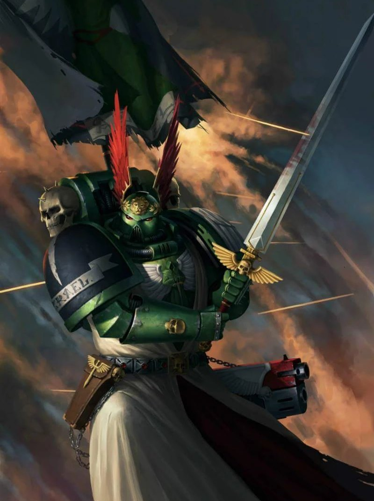
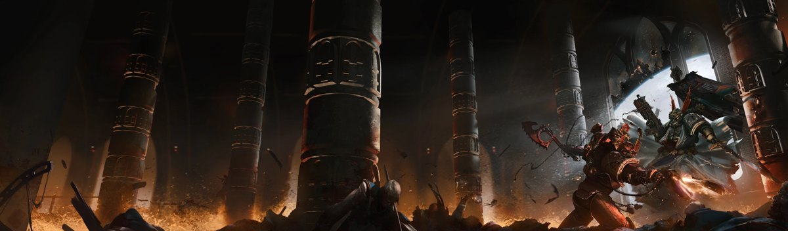

Azrael
| Azrael | |
|---|---|
| Supreme Grand Master of the Dark Angels | |
 Azrael after crossing the Rubicon Primaris, bearing the Sword of Secrets | |
| Supreme Grand Master of the Dark Angels | |
| Tenure | 939.M41 – present |
| Predecessor | Naberius |
| Primarch | Lion El'Jonson (returned in the 42nd millennium) |
| Grand Master of the Deathwing | |
| Tenure | 917 – 939.M41 |
| Born | M41, reputedly Kimmeria |
| Status | Active; Primaris Space Marine since the Arks of Omen campaigns |
| Allegiance | Imperium of Mankind; the Unforgiven |
| Fortress | The Rock |
| Other titles | Keeper of the Truth; master of the Inner Circle |
| Wargear | The Lion Helm; the Sword of Secrets; the Lion's Wrath; the Protector |
| Known for | Guardianship of the secrets of the Dark Angels; the escape of Luther |
Azrael, the Keeper of the Truth, is the Supreme Grand Master of the Dark Angels and, by a tradition that dates from the Second Founding, the master of the Inner Circle of all the Unforgiven Chapters. He has commanded the Chapter since 939.M41, when his predecessor Naberius fell in pursuit of the Fallen Angel Cypher. He alone, among the living members of the Chapter, was entrusted with its deepest secrets, among them the imprisonment of the arch-traitor Luther in the heart of The Rock.[1]
A recruit of the 10th Company who earned honours as a Scout, Azrael rose through the 3rd Company and the Deathwing to become Grand Master of the Deathwing in 917.M41. As Supreme Grand Master he has pressed the hunt for the Fallen harder than any predecessor, at a cost to the Chapter's standing with the wider Imperium. In the final days of the 41st millennium a gambit with the Tuchulcha Engine revealed to him that he himself had caused the original scattering of the Fallen through time.[1]
In the Era Indomitus Azrael lost Luther, freed from The Rock during a daemonic assault, and pledged the Unforgiven to Roboute Guilliman and the Indomitus Crusade in return for the Primaris Space Marines. He later crossed the Rubicon Primaris himself and led the Chapter against Abaddon the Despoiler and the daemon Vashtorr. The return of Lion El'Jonson has placed above him, for the first time in ten thousand years, a master to whom the Dark Angels answer before their Supreme Grand Master.[2][3]
Early life
[edit]Dark Angels renounce their past lives on induction, and Azrael says nothing of his. The recruitment records of The Rock, guarded by the Chaplains, are said to show that he came from the headhunting tribes of the ice-bound feral world of Kimmeria, a recruiting world of the Chapter. Before his thirteenth year the trophy stakes outside his family's lodge carried two dozen heads, and he was expected to lead his clan. The Chaplains took him with a handful of other candidates; he was the only one to pass the trials.[1]
As a novitiate of the 10th Company he fought on Daenyth Secundus against aeldari pirates. When his squad found and destroyed an aeldari scouting party at an active Webway portal, the young Azrael urged the sergeants to go through it before it closed. The Scouts emerged on the pirates' ship in orbit and crippled its engines so that a Dark Angels strike vessel could destroy it. Azrael received his first laurel of victory, one of only six Dark Angels in ten thousand years to earn one before becoming a full battle-brother.[1]
Knight of Caliban
[edit]Azrael was expected to join the Chaplaincy, so deep was his grasp of the Chapter's lore, but his path changed on Truan IX. The 3rd Company had come to investigate the disappearance of a Mechanicus outpost of more than half a million souls, and found them dead in the deep caverns, having torn each other apart. A psychic siren-song from beneath the world began to turn the Space Marines against one another. Master Batheus led his command squad into the depths and did not return.[1]
Azrael disobeyed Batheus' last order to evacuate. He gathered the sergeants who would follow him, descended, and found the command squad dead. Pressing on alone through the psychic assault, he found the source: a bloated Warp entity held half in realspace by an ancient temple of warding stones. Unable to kill its material form, he planted the command squad's melta bombs around the chamber and brought the temple down on himself and the creature. The monster was dragged back into the Warp. The survivors dug Azrael free three days later and petitioned for his honour; he was inducted directly into the Deathwing.[1]
Rise to command
[edit]Within a few years Azrael was a Knight Master of the Deathwing. When Master Razekiel, Batheus' successor, fell to an Ork warlord, the warriors of the 3rd Company asked that Azrael command them. As Master of the 3rd he overthrew the Nothurnis Monarchy, defeated the techno-recidivists of Faze V and killed Gorbaz Ironmaw, the warlord who had slain Razekiel. Admitted to the Inner Circle, he became known as the most consistent advocate of the hunt for the Fallen.[1]
In 917.M41 he became Grand Master of the Deathwing, and led the assault that killed the daemon-possessed governor of Sephlagm before the world was destroyed by Exterminatus. In 939.M41 the Supreme Grand Master Naberius was killed by Traitor Astartes in the Rhamiel Betrayal, an ambush laid while he hunted Cypher. Azrael led the Deathwing to recover his body, and was named as his successor.[1][a]
Supreme Grand Master
[edit]
On the day of his elevation Azrael was led by the Inner Circle into the depths of The Rock to the Chamber of Passageways, where the Watchers in the Dark gave him the Lion Helm and the Sword of Secrets. Alone, he passed beneath the Arch of Truth and faced the unspoken trial that every Supreme Grand Master must pass. He was then shown the Chapter's greatest secret: Luther, the betrayer of Caliban, held for ten millennia in a stasis cell warded with runes. Like each of his predecessors, Azrael tried to extract a confession from the prisoner, and like them he failed. Luther would only repeat that the Lion would return to absolve him, and that the day was near.[1]
Azrael's campaigns as Supreme Grand Master include the Pandorax Campaign, in which he was hunted aboard the battleship Revenge by Khârn the Betrayer, and the defence of the Cadian Gate in the 13th Black Crusade, where the Dark Angels and the Space Wolves under Logan Grimnar put aside their feud to fight together.[1]
The Tuchulcha Engine
[edit]Near the end of the 41st millennium, Cypher surrendered himself to Azrael and revealed that The Rock held the time-bending Tuchulcha Engine, and that the Fallen Angel Merir Astelan and the Death Guard Typhus were gathering similar devices. With the consent of the Watchers in the Dark, Azrael worked with Cypher to gather all three engines over the ruins of Caliban, where they opened a rift into the past. When the Fallen tried to enter it, Azrael, persuaded by the Librarian Ezekiel that changing history would be a catastrophe, ordered Tuchulcha to scatter anyone who entered. He did not specify the moment in time, and the engine scattered every Fallen, including those on Caliban ten thousand years before. Azrael realised that he had caused the event that his Chapter had spent ten millennia trying to undo.[1]
Era Indomitus
[edit]Luther's escape
[edit]When the Great Rift opened, The Rock was caught in the Imperium Nihilus. As the Noctis Aeterna passed, a daemon army led by the Fallen daemon prince Marbas breached The Rock's void shields and fought through its halls and dungeons, then vanished as suddenly as it had come. The wider Chapter believed the attack a mindless raid. Azrael knew that Luther had been taken from his cell, and suspected that the assault had been a diversion; he could share the knowledge with no one.[1]
The Indomitus Crusade
[edit]Azrael then summoned the masters of the Unforgiven Chapters to The Rock; several Librarians died sending the summons through the Rift, and not all Chapters arrived. Before the council could proceed, a fleet of the Indomitus Crusade came into orbit under Roboute Guilliman. Azrael feared that the Lord Commander had learned the Chapter's secret and came in judgement, and weighed whether to withdraw or to fight. He did neither. Guilliman brought Primaris Space Marines made from the purest gene-seed of the Lion, and declared that the Dark Angels might keep their own wings and order of battle under the revised Codex. Azrael and the masters of the successor Chapters knelt and pledged their Chapters to the Lord Commander.[2]
The Inner Circle distrusted warriors who had not passed its rituals. When the debate grew bitter, Azrael staked his authority on a Primaris warrior of the Deathwing, Apharan, and oversaw his trials himself. Apharan passed, and Primaris brothers were admitted to the Inner Circle.[1]
Crossing the Rubicon
[edit]Azrael later underwent the Rubicon Primaris. While still recovering from the procedure, he led the Dark Angels against Abaddon the Despoiler and the daemon Vashtorr the Arkifane, whose fleets of corrupted ships struck across the Imperium in the campaigns the Imperium named the Arks of Omen.[3]
The return of the Lion
[edit]
In the early 42nd millennium Lion El'Jonson returned. For ten thousand years each Supreme Grand Master had guarded the Chapter's shame in the knowledge that the Lion was absent; Azrael alone had known that Luther claimed his return was imminent. The Lion has since taken the field at the head of Dark Angels forces in the Imperium Nihilus. The Chapter's records of the first meeting between the primarch and his Supreme Grand Master, and of what the Lion has been told of the Inner Circle's secrets, are sealed by the Inner Circle.[3][4]
Status
[edit]As of the latest records Azrael is alive and remains Supreme Grand Master of the Dark Angels and master of the Inner Circle, serving under the returned Lion El'Jonson. He is a Primaris Space Marine. The hunt for Luther and the Fallen continues.[4]
Character
[edit]Azrael is grim, reticent and of unbending purpose. His chroniclers describe him as the embodiment of the Dark Angels' ideals and as a commander who never loses sight of the hunt for the Fallen even in the midst of battle. He believes that a Chapter cleansed of its shame will be a greater weapon for the Emperor, and that this justifies the strain the hunt places on the Chapter's relations with the rest of the Imperium. He walks, in the words of his own Chaplains, along the edge of the precipice of damnation and does not look down.[1]
Wargear
[edit]- The Lion Helm, a winged helm said to have been worn by Lion El'Jonson, which generates a protective field.
- The Sword of Secrets, greatest of the Heavenfall Blades cut from a meteorite of black stone that struck The Rock. It is also the key to Luther's cell.
- The Lion's Wrath, a master-crafted combi-plasma made by the techno-magos Prestor the Unchallenged after the fall of Caliban.
- The Protector, a suit of artificer armour that has been a Chapter relic since the 37th millennium.
Timeline
[edit]| Date | Event |
|---|---|
| M41[b] | Azrael is born, reputedly on the feral world of Kimmeria |
| c. 910.M41[c] | Azrael is inducted into the Dark Angels and wins his first laurel of victory on Daenyth Secundus |
| c. 915.M41[d] | Azrael saves the 3rd Company on Truan IX and is inducted directly into the Deathwing |
| 917.M41 | Azrael becomes Grand Master of the Deathwing |
| 821.M41 | The Siege of Vraks records a Supreme Grand Master named Azrael; this earlier record is disputed |
| 939.M41 | Supreme Grand Master Naberius is killed in the Rhamiel Betrayal, and Azrael succeeds him |
| 959–961.M41 | During the Pandorax Campaign Azrael is hunted aboard the Revenge by Khârn the Betrayer |
| late M41 | Azrael's use of the Tuchulcha Engine scatters the Fallen through time |
| 999.M41 | The Dark Angels and the Space Wolves defend the Cadian Gate together in the 13th Black Crusade |
| 999.M41 | The opening of the Great Rift puts The Rock in the Imperium Nihilus; a daemon raid frees Luther |
| M42 | Azrael pledges the Unforgiven Chapters to Roboute Guilliman and the Indomitus Crusade in return for Primaris Space Marines |
| M42 | Azrael undergoes the Rubicon Primaris and leads the Dark Angels against Abaddon the Despoiler in the Arks of Omen campaigns |
| early M42 | Lion El'Jonson returns to the Imperium and takes command of the Dark Angels above Azrael |
See also
[edit]Notes
[edit]- ^ Records of the Siege of Vraks in 821.M41 name a Supreme Grand Master Azrael at the head of the Dark Angels, more than a century before the present Azrael's accession. The present Azrael learned during the Pandorax Campaign, from the World Eater Khârn the Betrayer, that an earlier Supreme Grand Master had borne the same name.
- ^ Date of birth is not recorded; the year given is the Chapter's own estimate.
- ^ Estimated; no record gives an exact year.
- ^ Estimated; no record gives an exact year.
References
[edit]- ^ a b c d e f g h i j k l m n Annals of the Dark Angels (sealed, rev. 003.M42). The Rock.
- ^ a b Records of the Indomitus Crusade (ongoing). Office of the Lord Commander.
- ^ a b c Despatches on the Arks of Omen (c. 013.M42). Office of the Lord Commander.
- ^ a b Liber Leonis: the Return of the Primarch (sealed, ongoing). Inner Circle of the Dark Angels.